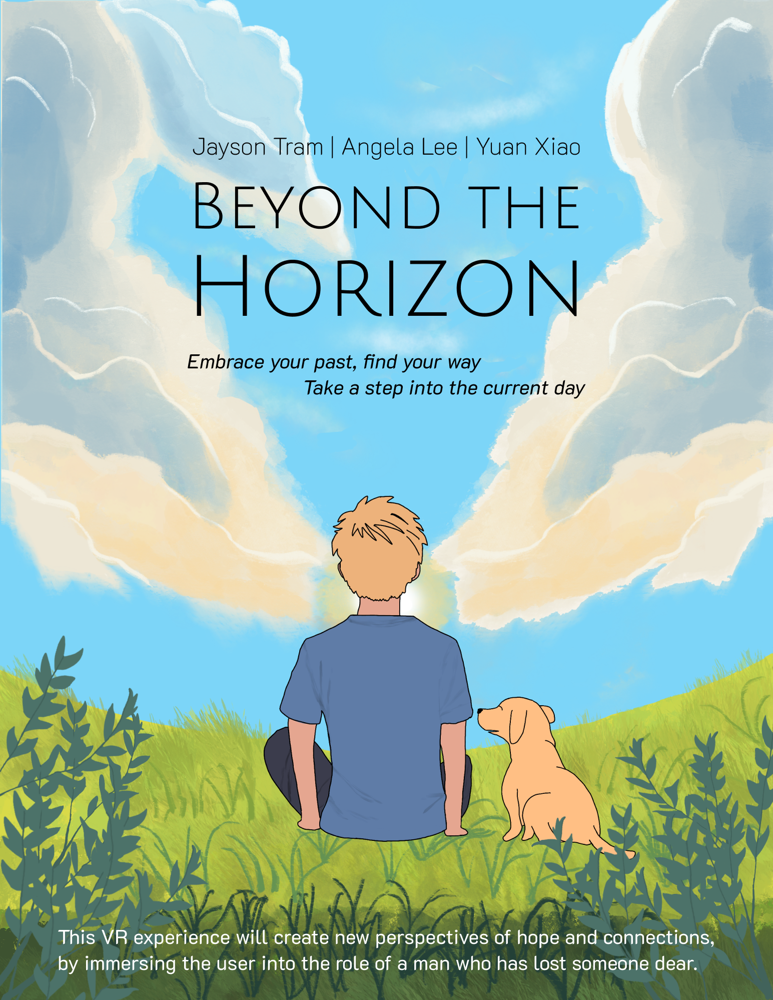
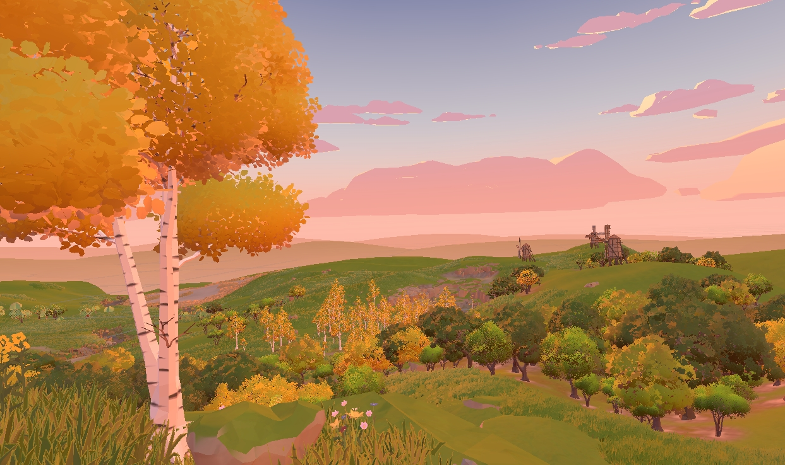
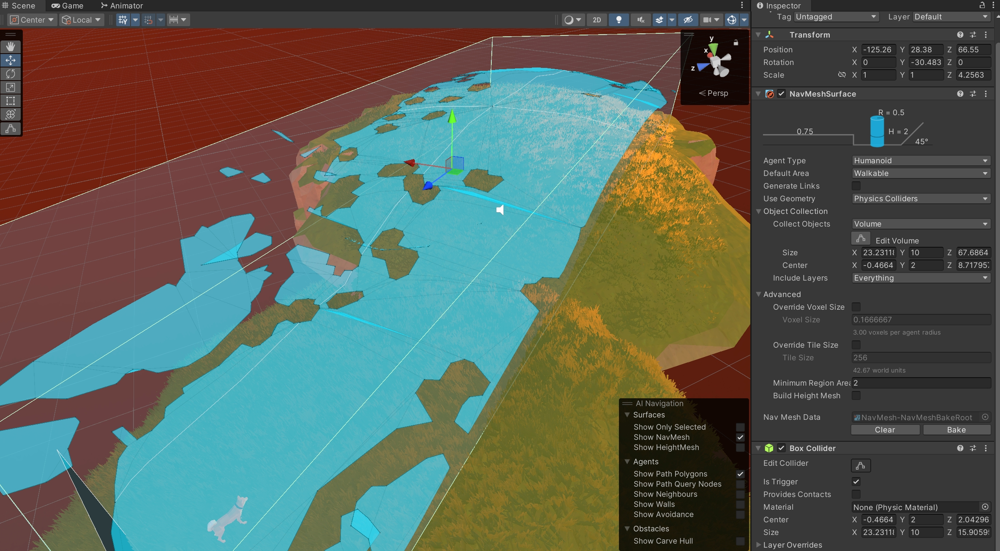

Project Overview
Project Goal:
- Present a VR story about loss, emotional lows, and healing rebirth, allowing users to gain new insights or emotional resonance through immersive interaction.
- Through a combination of realistic 3D environments, atmospheric storytelling, and interactive mechanics, the project aims to evoke emotions and engage players in a personal journey of transformation.
My Role: 3D Modeler, Unity & Multi-purpose Worker
Collaborators:
- Jayson Van Tram – Project Leader & Unity
- Man Ying Angela Lee – Visual Designer & Unity
Built With:
- Unity (game engine)
- Maya (3D modeling)
- Visua Studio (C# programming)
- Premiere Pro (video editing)
Work Time: 4 Months (January 2025 - April 2025)
Showcase:
Project Description
A Journey Through Grief and Renewal
Beyond the Horizon is an immersive VR experience themed around loss and healing. Players step into the shoes of a young man in his twenties coping with the recent loss of a close friend. Over the course of four different “days,” the player navigates various environments and interacts with objects—and most importantly, a dog companion—embarking on a journey from grief toward healing. The experience begins in a somber, dimly lit environment reflecting the protagonist’s sorrow, and gradually transforms into a vibrant, life-filled world by the final day, symbolizing emotional renewal.
Promotional Poster

Promotional poster illustrated and designed by me for the game project
Core Mechanics & Narrative Structure
Day One: Gloomy Room
Players begin in a dimly lit, claustrophobic bedroom that reflects the protagonist’s emotional state.
- They can explore freely, inspecting items such as a framed photo of the friend, a pair of diving goggles, and a mirror, that trigger immersive sound cues and reveal the protagonist’s anxiety and fear of drowning.
My Works
- Scene Modeling: I built the 3D room in Maya, then imported and tweaked it within Unity.
- Lighting: lighting adjustments ensured the environment strongly conveys the protagonist’s emotional weight.

Day 1 bedroom scene reflecting grief and emptiness
Day Two: Living Room & Initial Bonding
The dog enters the picture, offering the first glimpse of comfort and potential healing.
- Players can feed, pet, and play with the dog in a more spacious living-room environment. This fosters an emotional bond and begins gently lifting the gloom established on Day One.
My Works
- Scene Building: I set up and organized the spatial layout in Unity.
- Audio: I handled basic sound design tasks including the dog’s panting/breathing sounds and simple object-interaction effects (e.g., a soft rustle when players pick up items).
Day Three: Waterfall Incident
In a tense turn of events, the dog slips off a ledge and is swept into the water, forcing the protagonist to confront his phobia.
- Players must leap into the river to save the dog, experiencing a unique leaning locomotion system that lets them tilt their body to move forward underwater. The dog’s desperate movements and the protagonist’s racing heartbeat are central to ramping up the urgency.
My Works
- Scene Building: I set up and organized terrain, water assets, and the waterfall’s spatial layout in Unity.
- Simulating the Dog’s Drowning: I coded left-right drifting for the dog to simulate being pulled by currents and added flailing animations to convey panic. This scripted “drowning” behavior deepens the rescue’s emotional impact.
- Leaning Locomotion: I successfully implemented a VR-based movement mechanic where the player physically leans forward to swim, fostering a heightened sense of immersion.
- Water & Audio Cues: I tied heartbeat, heavy breathing sounds, and muffled underwater effects to the protagonist’s movement, emphasizing both physical and psychological tension.
The dog is swept away by the river using a custom Dog Floating script, marking a sudden emotional turning point
Day Four: Autumn Forest & Resolution
After emerging from the water, the protagonist and dog find themselves in a serene autumn forest.
- Players follow the dog along a winding path lined with autumnal foliage, culminating in a cliffside view—the exact scene depicted in the Day One photo. Uplifting music underscores the character’s emotional renewal.
My Works
- Scene Building: I built and refined the forest layout in Unity, ensuring a wide, open atmosphere that starkly contrasts with the earlier, confined spaces. This shift signifies emotional liberation through spatial contrast.
- Guided Movement: Created a walkable area using a Box Collider and NavMeshSurface on a custom object, and paired it with a NavMesh Agent and custom path-following script to guide the dog through specific points. This setup enables the dog to move along a controlled path and stop at key narrative moments.
- Root Motion Adjustment: Overhauled the dog’s animation clips by removing position keyframes. This prevented conflicts with NavMesh movement so the dog wouldn’t “slide” or abruptly reset mid-animation.

A bright, open landscape from Day 4, symbolizing emotional renewal and the journey’s hopeful conclusion
Dog movement is controlled by the Dog Guide Controller script and NavMesh Agent. Two-part interaction triggered by the player's proximity

The baked NavMeshSurface defines a walkable area for AI, enabling controlled pathfinding across the game grounds
Takeaways
Constructing multiple scenes taught me the importance of lighting and layout for setting the mood and guiding navigation in VR spaces, underscoring the essence of Environment & Lighting Mastery. Audio Integration proved equally critical, designing dog breathing and object sound effects highlighted how sound design can immerse players further and strengthen storytelling. Meanwhile, I refined my Unity Skills through scene setup, terrain manipulation, and basic performance optimization, alongside specialized NavMesh usage for AI pathfinding. Collaboration & Consistency also played a pivotal role, as coordinating with teammates handling object interactions, code, and advanced animations emphasized the need for consistent asset naming, shared Git workflows, and clear communication.
In the future, Deeper Audio Layers will involve incorporating dynamic music that responds to player location or emotional beats, particularly in dramatic moments such as the waterfall rescue. Expanded Environmental Storytelling calls for adding more discoverable elements in each day’s environment, giving players deeper insights into the protagonist’s past and his relationship with his friend. Further AI Refinements will focus on experimenting with additional dog behaviors—such as responding to the player’s gaze or sniffing around objects—to heighten the sense of companionship and enhance overall immersion.